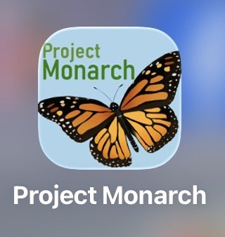
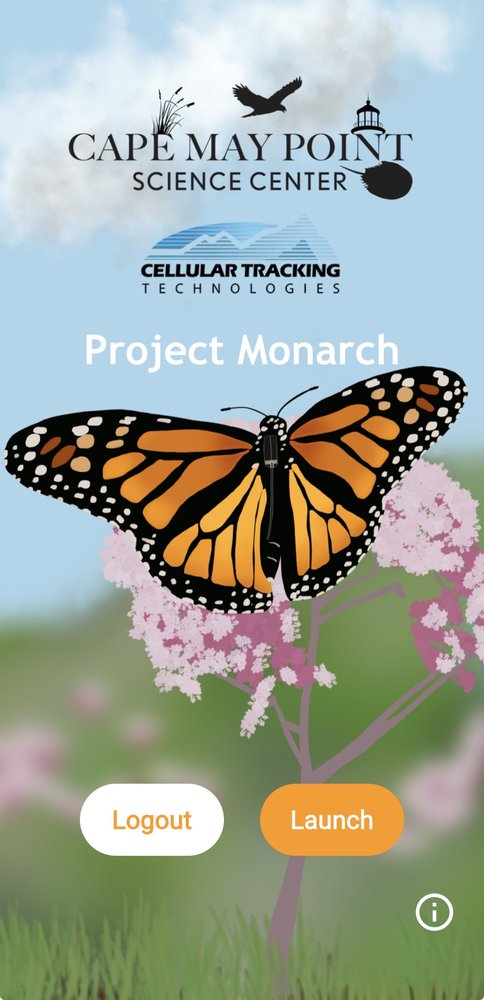
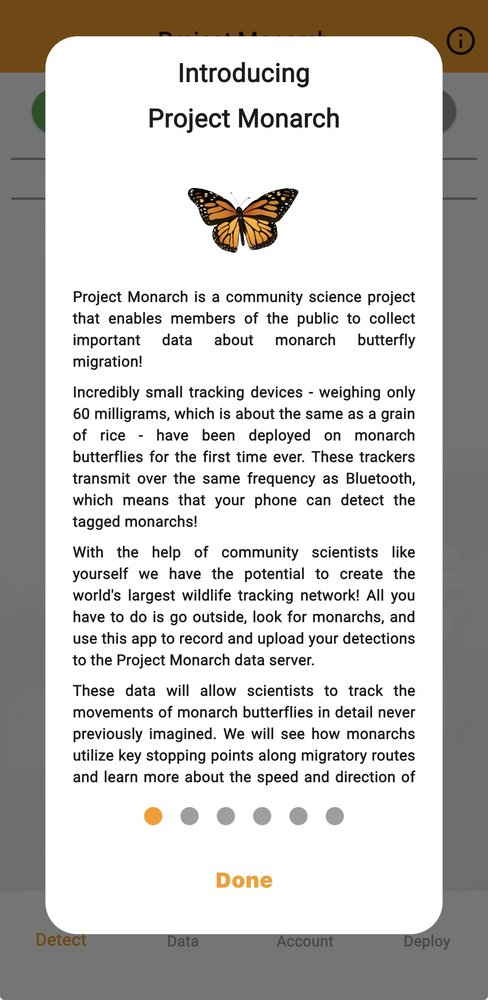
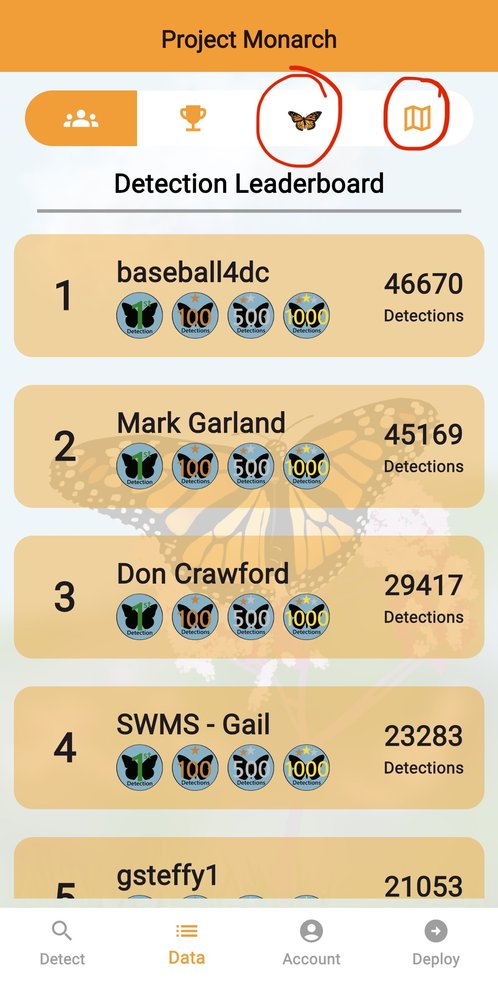
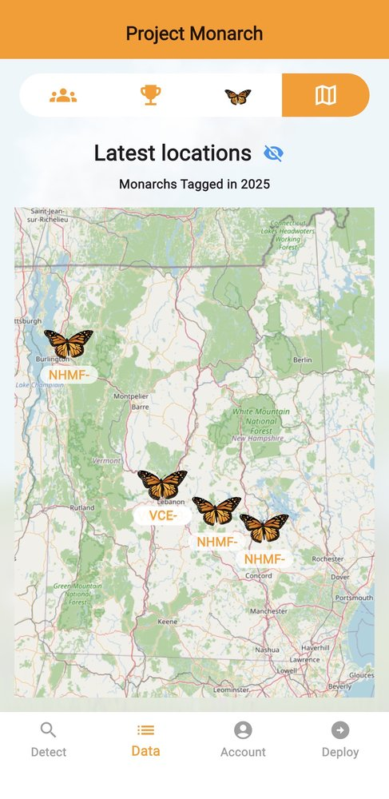
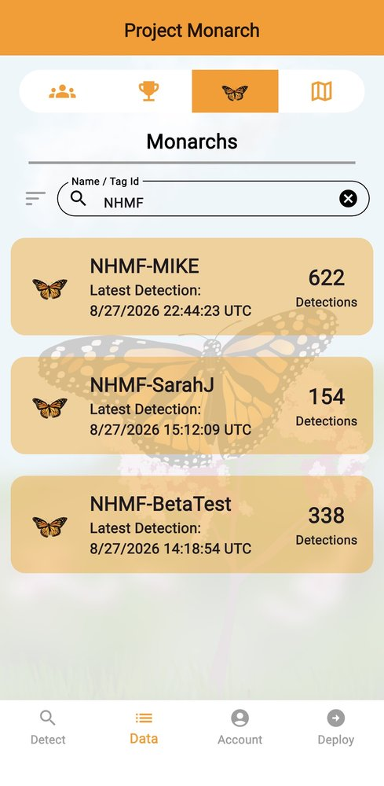
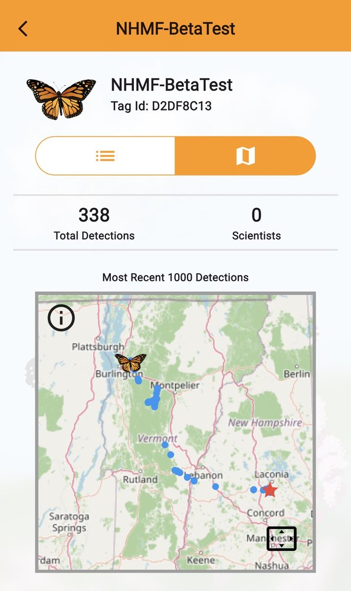
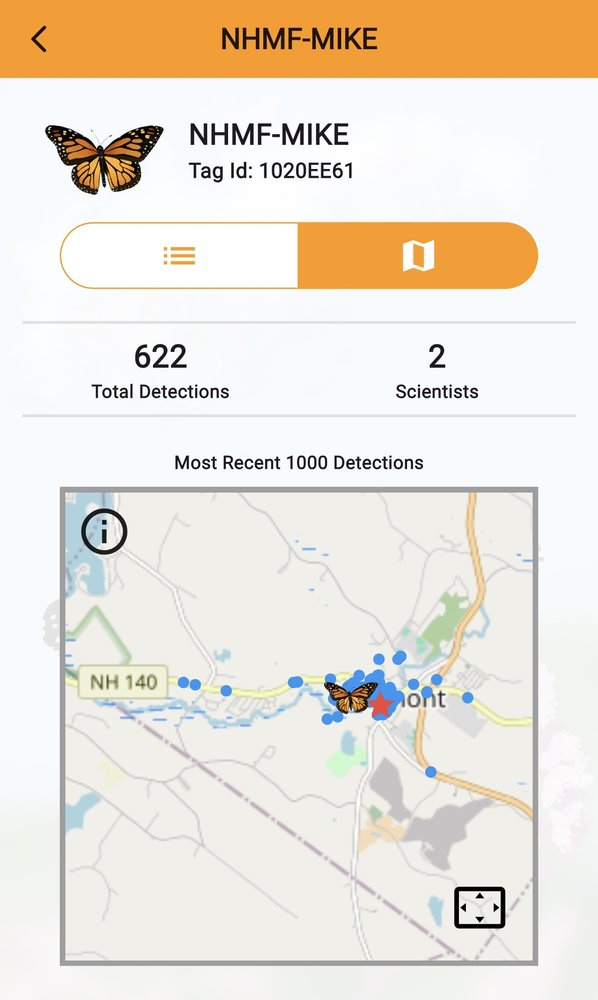
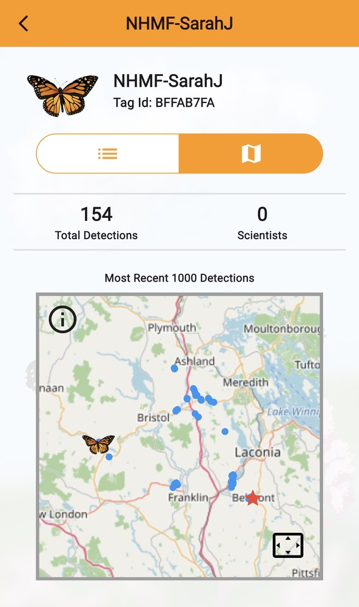
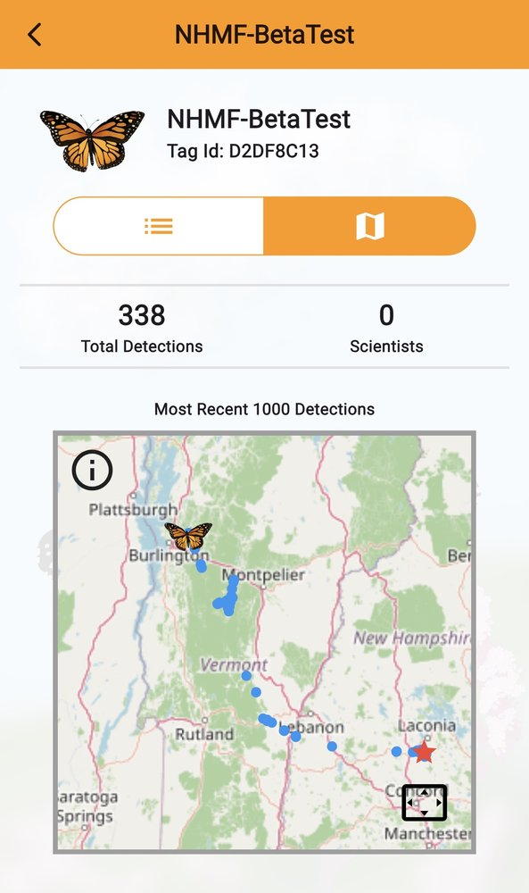

Real-Time Migration Tracking
Follow our nanotagged monarchs on their journey south using the free Project Monarch app — see live detections, migration routes, and how far they've traveled since being released right here in Belmont.
A Historic Moment
On Saturday, August 22, 2026, the NH Monarch Festival made history: two monarchs were released bearing the first BlūMorpho radio tags ever deployed in the State of New Hampshire. NHMF partnered with New Hampshire Audubon — event coordinator and citizen scientist Amira Provost worked alongside NH Audubon biologist Lindsay Herlihy to carry out the tagging and release. A third monarch, tagged two days before the festival as a beta test of the equipment, brought the total to three NHMF-tagged butterflies now flying free.
The BlūMorpho tag, developed by Cellular Tracking Technologies, weighs less than a single grain of rice. It's solar powered, Bluetooth-enabled, and reports its location in near real time through the free Project Monarch app — giving scientists (and anyone curious) an unprecedented window into how monarchs actually migrate. For New Hampshire, it marks the start of a new chapter in tracking the state's monarch population as it makes its way south each fall.
Step-by-Step
Follow these steps in the free Project Monarch app to find NHMF-SarahJ, NHMF-MIKE, and NHMF-BetaTest — and watch their journey unfold in real time.

Search for Project Monarch in the App Store or Google Play and download it — it's free. (Don't confuse it with the similarly-named Monarch Watch or iNaturalist apps.)

Create a login and sign in, then tap the orange LAUNCH button to enter the app.

Project Monarch will walk you through some background on the project and how the tiny tracking devices work. Once you've read through it, tap Done.
Tap DATA at the bottom of the screen — this is where you'll find all three NHMF nanotags.

Tap the map icon (top right) for a live, real-time map of all detections, or tap the butterfly icon to search for a specific tagged monarch by name.

Zoom in on New Hampshire to see, in real time, where the NHMF butterflies currently are. The map updates every few minutes. Tap on any butterfly icon to see its full name and how far it's traveled from its release location.

From the butterfly list view, tap the search icon and type NHMF — all three of our tagged monarchs will pop up: NHMF-SarahJ, NHMF-MIKE, and NHMF-BetaTest. Tap on any one to see more information.

Tap a butterfly's name to see its full detection history, then tap the map icon to see its data points. Each blue dot is a detected data point from the nanotag. The red star marks where the nanotag was deployed — the spot where the butterfly was released.
Meet Our Monarchs
Three monarchs currently carry an NHMF nanotag. Search “NHMF” in the app to follow all three.

Mike was found as a caterpillar at a friend's house in Epsom on July 23rd, and emerged as a butterfly on August 21st — just in time to be tagged and released the very next day at the Festival, in honor of Amira's father-in-law, who passed away this past July. After his release, he circled high above the crowd before settling into a nearby quaking aspen to rest.

SarahJ began life as an egg discovered in a neighbor's field on July 20th, and by the time she emerged a month later, she'd developed quite the personality — her tagging took much longer than expected thanks to her feisty spirit! She was named by one of the Festival's generous sponsors and released into an overcast sky that already smelled like rain, circling high before disappearing into a nearby white pine.

Originally planned as a female release, BetaTest became the backup plan when she proved too feisty to safely tag — a calmer male took her place. Found as a caterpillar in a neighbor's field on July 20th, he emerged as a butterfly on August 19th and was tagged the very next day, two days ahead of the Festival, as a test run to make sure everything was ready. After release, he circled overhead before ducking into a plum tree or black cherry nearby, and stuck close to Hurricane Road for nearly two days before finally striking out for Vermont — on the morning of the Festival itself.
Learn More
Dig deeper into the technology, research, and partnerships behind the nanotagging program — and download the app for yourself.
Learn about the partnership and pilot program behind Project Monarch's nanotagging technology.
celltracktech.com → ResearchRead about the historic spring migration data collected through the Project Monarch tracking network.
celltracktech.com → Citizen ScienceExplore Monarch Watch's radio tagging program and how it complements nanotag tracking efforts.
monarchwatch.org/radiotag → Webinar RecordingWatch NH Audubon's recorded webinar on tracking monarch migration across borders.
nhaudubon.org → Download · iOSGet the free Project Monarch app for iPhone and iPad.
apps.apple.com → Download · AndroidGet the free Project Monarch app for Android devices.
play.google.com →